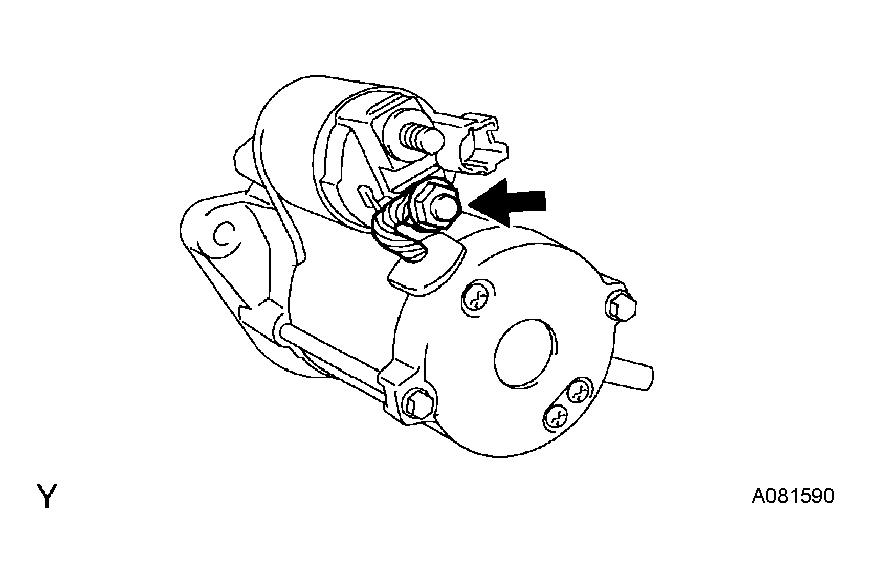
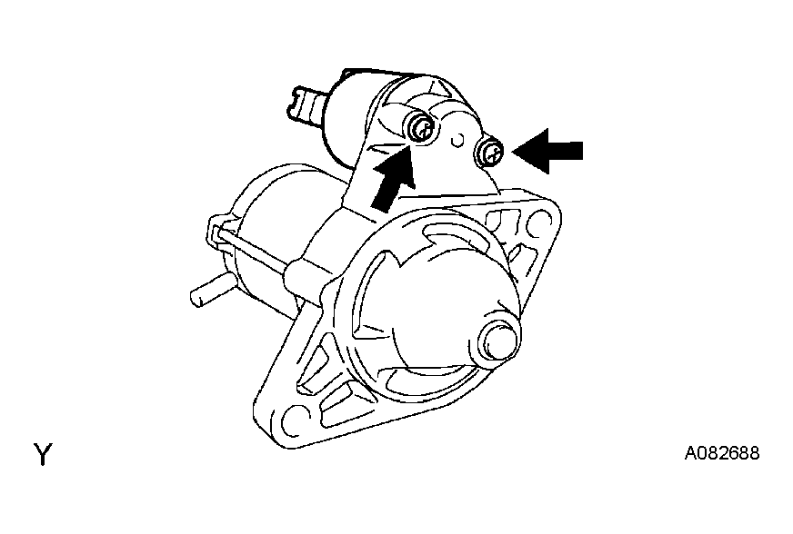
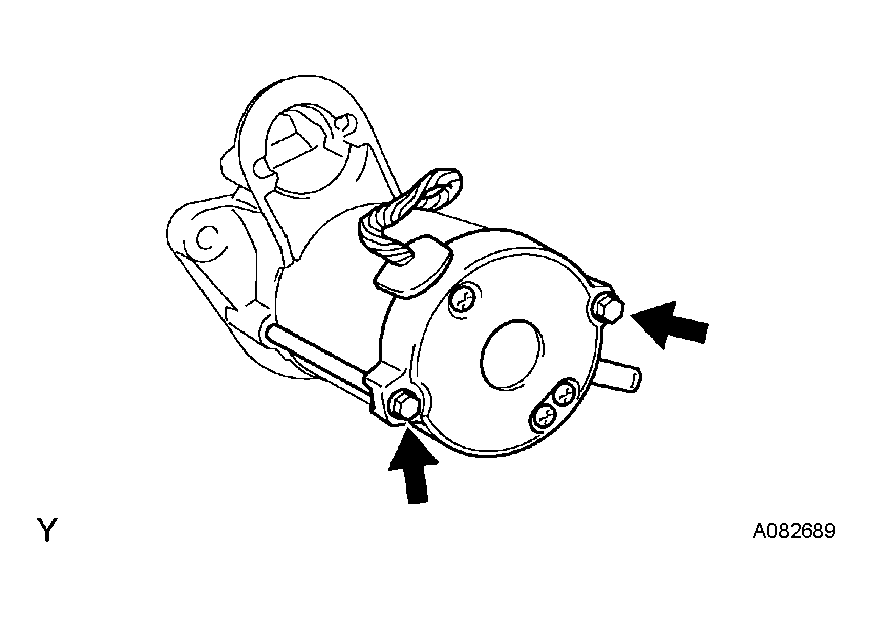
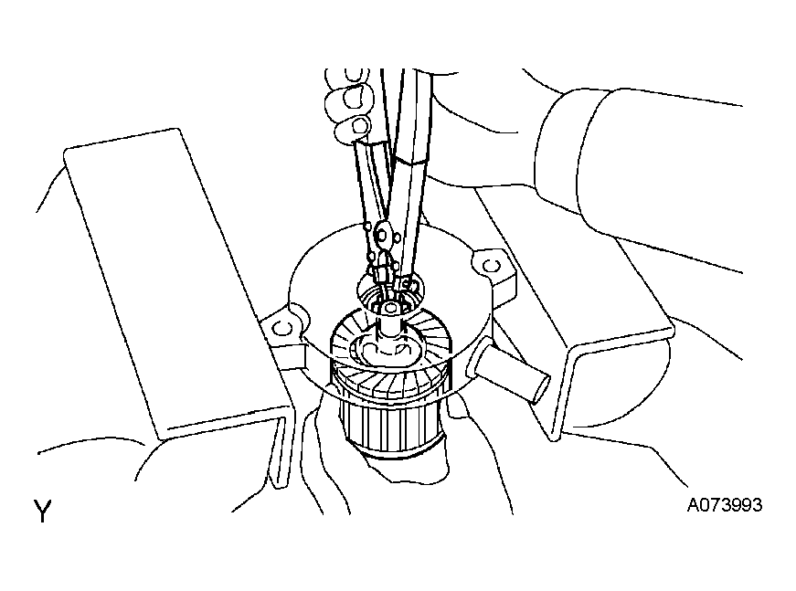
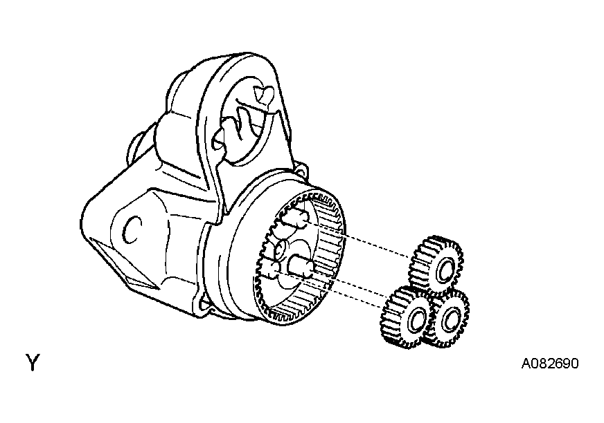
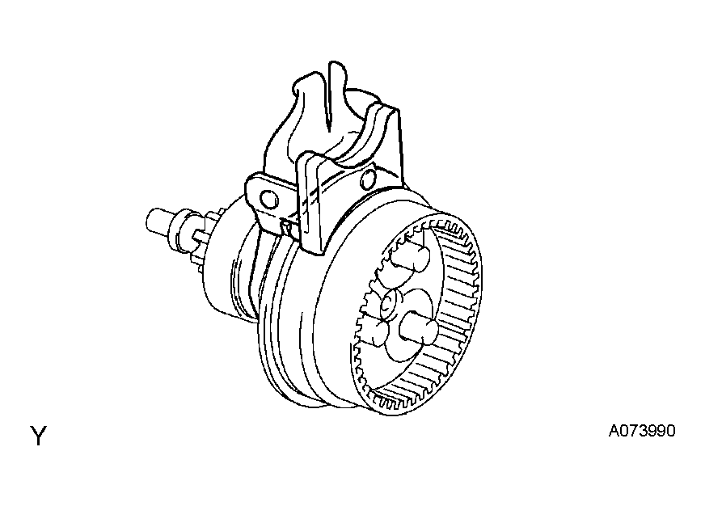

Starting (1NZ-FE): Starter: Disassembly
- REMOVE MAGNET SWITCH BODY
- Remove the nut, and disconnect the lead wire from the magnet starter switch body.

Courtesy of © TOYOTA, LICENSE AGREEMENT TMS1002
- Remove the 2 screws holding the magnet starter switch body.

Courtesy of © TOYOTA, LICENSE AGREEMENT TMS1002
- Remove the magnet starter switch body.
- Remove the return spring and plunger.
- REMOVE STARTER COMMUTATOR END FRAME COVER
- Using a screwdriver, remove the cover.
- REMOVE STARTER ARMATURE ASSEMBLY
- Remove the 2 through bolts, and pull out the starter yoke and commutator end frame together.
- Remove the starter yoke from the commutator end frame.

Courtesy of © TOYOTA, LICENSE AGREEMENT TMS1002
- Using snap ring pliers, remove the snap ring and plate washer.

Courtesy of © TOYOTA, LICENSE AGREEMENT TMS1002
- Remove the starter armature from the commutator end frame.
- REMOVE STARTER ARMATURE PLATE
- Remove the plate from the starter yoke.
- REMOVE PLANET GEAR
- Remove the 3 planet gears.

Courtesy of © TOYOTA, LICENSE AGREEMENT TMS1002
- REMOVE STARTER CENTER BEARING CLUTCH SUB-ASSEMBLY
- Remove the starter center bearing clutch with drive lever set pin from the starter drive housing.
- Remove the drive lever set pin from the starter center bearing clutch.

Courtesy of © TOYOTA, LICENSE AGREEMENT TMS1002